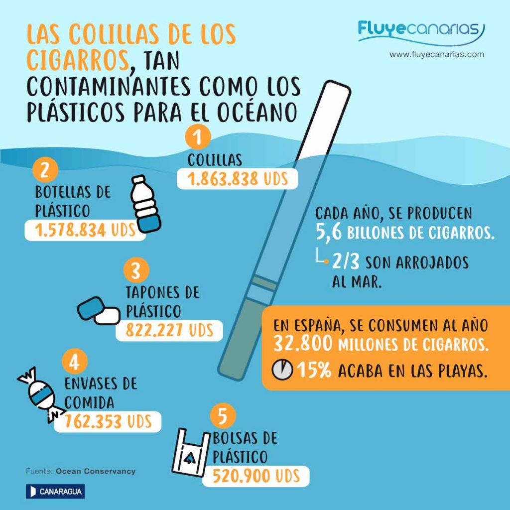

Soluciones
Reciclar, reducir el uso de plásticos y apoyar iniciativas ambientales pueden hacer la diferencia.

Evita las pajillas o popotes
Reducir su uso evita la contaminación marina. Se estima que cada año se arrojan 8 millones de toneladas de plástico al océano.
Revisa la etiqueta
Prefiere productos de mar con certificación de pesca sostenible. Esto ayuda a conservar las poblaciones de peces.

No tires colillas en la calle
4.5 billones de colillas se desechan cada año. Sus químicos afectan la vida marina. ¡Tírala en la basura!

Reduce tu huella de carbono
Opta por bicicleta o transporte público, usa energía renovable y consume responsablemente.